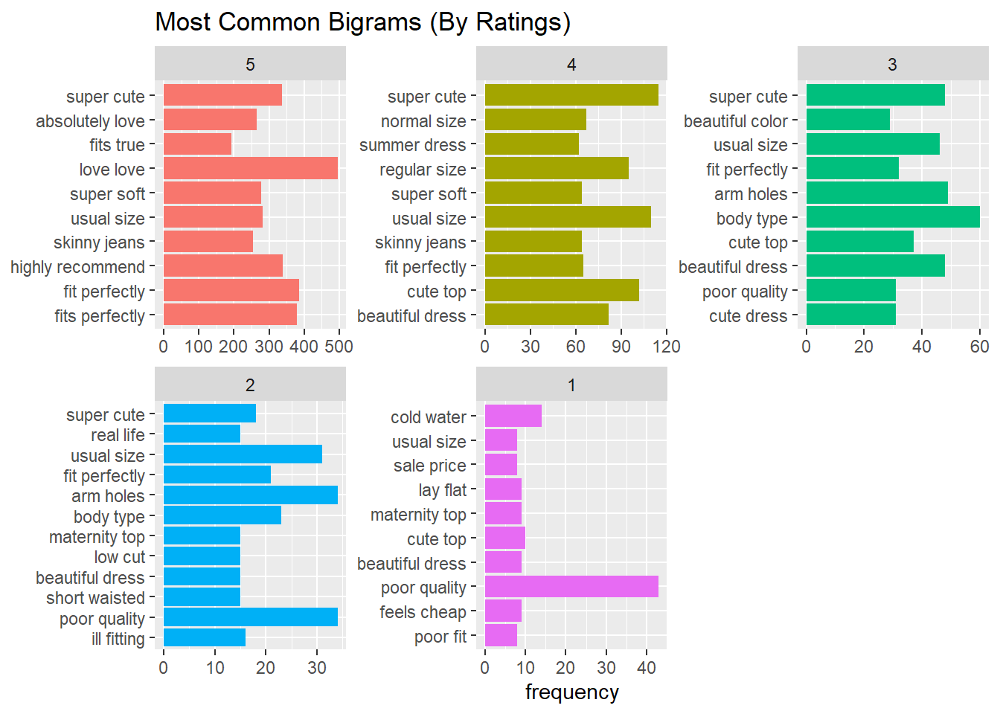

Fundamentos de ciencia de datos con R
2022-10-16
Capítulo 1 Procesamiento del lenguaje natural para identificar tendencias de moda en textil
Ambrosio Nguema Ansue
El modelado de temas es el nombre colectivo de las técnicas que ayudan a dividir los textos en temas, por lo que la determinación de los temas relevantes es parte del análisis. Como se trata de una técnica no supervisada, requiere muchas iteraciones. Las técnicas de PNL más novedosas podrían superar a los modelos temáticos en términos de precisión. Sin embargo, una gran ventaja de usar los temas extraídos del texto en una tarea posterior es que la contribución de cada tema (y otras características que tiene disponibles) en el modelo de predicción se analiza y visualiza fácilmente. Esto no solo es útil para usted, sino sobre todo para cualquiera a quien le esté explicando el modelo predictivo. Hay una serie de algoritmos para extraer temas de una colección de textos, pero la asignación latente de Dirichletes LDA uno de los algoritmos más populares porque es eficiente y da como resultado temas altamente interpretables. La interpretabilidad de los temas es una característica importante de un modelo de tema, ya que no solo queremos encontrar agrupaciones de palabras estadísticamente relevantes, también queremos poder etiquetar los temas identificados con un nombre de tema con el que otros puedan relacionarse. Como tal, el modelado de temas tiene algunas similitudes con las técnicas de agrupación como KMeans
1.1 Prededicción de prendas con mejores comentarios
El conjunto clothes de datos de reseñas y calificaciones de ropa de comercio electrónico para mujeres contiene 23.486 entradas relacionadas con la edad y la revisión dada por el cliente y sus opiniones sobre la ropa de mujer de varios minoristas.
library(readr)
library(tidyverse)## ── Attaching packages ─────────────────────────────────────── tidyverse 1.3.2 ──
## ✔ ggplot2 3.3.6 ✔ dplyr 1.0.9
## ✔ tibble 3.1.8 ✔ stringr 1.4.0
## ✔ tidyr 1.2.0 ✔ forcats 0.5.1
## ✔ purrr 0.3.4
## ── Conflicts ────────────────────────────────────────── tidyverse_conflicts() ──
## ✖ dplyr::filter() masks stats::filter()
## ✖ dplyr::lag() masks stats::lag()library(tidytext)
clothes <- read.csv("data/clothes.txt", sep="")El primer registro presenta la siguiente estructura la información.
head(clothes)[1,]## ID Age Title Review Rating
## 1 767 33 <NA> Absolutely wonderful - silky and sexy and comfortable 4
## Recommend Liked Division Dept Class
## 1 1 0 Initmates Intimate IntimatesPara ver qué Departamento obtiene el mayor porcentaje de revisiones/calificaciones.
library(ggplot2)
ggplot(data.frame(prop.table(table(clothes$Dept))),
aes(x=Var1, y = Freq*100)) +
geom_bar(stat = 'identity') +
xlab('Department Name') +
ylab('Percentage of Reviews/Ratings (%)') +
geom_text(aes(label=round(Freq*100,2)), vjust=-0.25) +
ggtitle('Percentage of Reviews By Department') La mayor proporción de las reseñas/calificaciones son para
La mayor proporción de las reseñas/calificaciones son para Tops y la menor para Jackets.
En cuanto a las calificaciones por departamento, excluida la tendencia,
ya que contiene una mezcla de ropa que puede encajar en las otras categorías del Departamento, el análisis se centra en 5 departamentos: Bottoms, Dresses, Intimate, y Tops.
phisto <- clothes |> filter(!is.na(Dept), Dept != 'Trend') |>
mutate(Dept = factor(Dept)) |>
group_by(Dept) |>
count(Rating) |>
mutate(perc = n/sum(n))
phisto |> ggplot(aes(x=Rating, y = perc*100, fill = Dept)) +
geom_bar(stat = 'identity', show.legend = FALSE) +
facet_wrap(~Dept) + ylab('Percentage of reviews (%)') +
geom_text(aes(label=round(perc*100,2)), vjust = -.2) +
scale_y_continuous(limits = c(0,65)) 
En cada Departamento, la calificación dominante otorgada es de 5 estrellas.
Jacket tiene el mayor número de calificaciones de 5 estrellas de todos los departamentos aunque Jacket fue el que tuvo la menor cantidad de reseñas.
Si se analizan los departamentos por edad
Veamos la popularidad de cada departamento por edad. Agrupé la edad en categorías (18-29, 30-39, 40-49, etc.)
ages <- clothes |> filter(!is.na(Age), !is.na(Dept), Dept != 'Trend') |> select(ID, Age, Dept) |> mutate(Age_group = ifelse(Age < 30, '18-29', ifelse(Age < 40, '30-39', ifelse(Age < 50, '40-49', ifelse(Age < 60, '50-59', ifelse(Age < 70, '60-69', ifelse(Age < 80, '70-79', ifelse(Age < 90, '80-89', '90-99'))))))))
ages <- ages |> mutate(Age_group = factor(Age_group), Dept = factor(Dept, levels = rev(c('Tops', 'Dresses', 'Bottoms', 'Intimate', 'Jackets'))))
ages |> filter(Age < 80) |> group_by(Age_group) |> count(Dept) |> ggplot(aes(Dept, n, fill = Age_group)) + geom_bar(stat='identity', show.legend = FALSE) + facet_wrap(~Age_group, scales = 'free') + xlab('Department') + ylab('Number of Reviews') + geom_text(aes(label = n), hjust = 1) + scale_y_continuous(expand = c(.1, 0)) + coord_flip() 
La distribución del número de reseñas por Departamento (i.e. Tops con el mayor número de reseñas, vestidos con el segundo mayor número de reseñas, etc.) se mantienen dentro de cada uno de los grupos de edad mostrados. Las personas de 30 años dejaron la mayoría de las reseñas, seguidas por las personas de 40 y 50 años. Esto les da a las empresas una idea de quién es el grupo demográfico objetivo y qué tipo de ropa (camisas, vestidos) tienen demanda.
Los grupos de edad 80-89 y 90-99, sin embargo, muestran una distribución diferente. Es posible que algunos de los revisores no estén escribiendo para su edad adecuada, pero eso es solo mi especulación.
ages |> filter(Age >= 80) |> group_by(Age_group) |> count(Dept) |> ggplot(aes(Dept, n, fill = Age_group)) + geom_bar(stat='identity', show.legend = FALSE) + facet_wrap(~Age_group, scales = 'free') + xlab('Department') + ylab('Number of Reviews') + geom_text(aes(label = n), hjust = 1.2) + coord_flip()
1.2 Bigram Analysis and Visualization
Para hacer un análisis de bigrama, se eliminan las entradas que no tienen reseñas. Hubo 845 revisiones NA, por lo que 845/23486 * 100 = 3,6 % de calificaciones no se tendrán en cuenta. Además, se combinó el título con la reseña para reunir todas las palabras en una sola sección.
clothesr <- clothes |> filter(!is.na(Review))
notitle <- clothesr |> filter(is.na(Title)) |> select(-Title)
wtitle <- clothesr |> filter(!is.na(Title)) |> unite(Review, c(Title, Review), sep = ' ')
main <- bind_rows(notitle, wtitle)Se ordenan las palabras vacías y se eliminan los dígitos. Se agrupan las palabras de acuerdo con sus calificaciones y se trazaron los 10 bigramas más comunes para cada calificación.
bigramming <- function(data){
cbigram <- data |> unnest_tokens(bigram, Review, token = 'ngrams', n = 2)
cbigram_sep <- cbigram |> separate(bigram, c('first', 'second'), sep = ' ')
cbigram2 <- cbigram_sep |> filter(!first %in% stop_words$word, !second %in% stop_words$word, !str_detect(first, '\\d'), !str_detect(second, '\\d')) |> unite(bigram, c(first, second), sep = ' ')
return(cbigram2)
}
top_bigrams <- bigramming(main) |> mutate(Rating = factor(Rating, levels <- c(5:1))) |> mutate(bigram = factor(bigram, levels = rev(unique(bigram)))) |> group_by(Rating) |> count(bigram, sort=TRUE) |> top_n(10, n) |> ungroup()
top_bigrams |> ggplot(aes(bigram, n, fill = Rating)) + geom_col(show.legend = FALSE) + facet_wrap(~Rating, ncol = 3, scales = 'free') + labs(x=NULL, y = 'frequency') + ggtitle('Most Common Bigrams (By Ratings)') + coord_flip()
No hace falta decir que hay frases positivas para las calificaciones más altas y frases negativas para las calificaciones más bajas. La frase “agujeros para los brazos” aparece en las reseñas de 2,3 estrellas, lo que podría referirse a una falta de ajuste. Centrémonos en las reseñas de 5 estrellas y las reseñas de 1 estrella para analizar lo bueno o lo malo de las prendas.
1.3 Network Visualization:
Primero, hagamos una visualización en red de las reseñas de 5 estrellas. Para hacerlo, usaremos las bibliotecas igraph y ggraph para mostrar una red que resalta las palabras compartidas dentro de los bigramas más comunes.
library(ggraph)
library(igraph)##
## Attaching package: 'igraph'## The following objects are masked from 'package:dplyr':
##
## as_data_frame, groups, union## The following objects are masked from 'package:purrr':
##
## compose, simplify## The following object is masked from 'package:tidyr':
##
## crossing## The following object is masked from 'package:tibble':
##
## as_data_frame## The following objects are masked from 'package:stats':
##
## decompose, spectrum## The following object is masked from 'package:base':
##
## unionfiverating <- main |> filter(Rating == 5)
onerating <- main |> filter(Rating == 1)
five <- bigramming(fiverating) |> count(bigram, sort = TRUE)
one <- bigramming(onerating) |>
count(bigram, sort = TRUE)
graph_five <- five |>
separate(bigram, c('first','second'), sep = ' ') |>
filter(n > 70) |>
graph_from_data_frame()
graph_one <- one |>
separate(bigram, c('first','second'), sep = ' ') |>
filter(n > 5) |>
graph_from_data_frame()Red para 1 estrella:
set.seed(11111)
ggraph(graph_one, layout = "fr") +
geom_edge_link() +
geom_node_point(color = 'aquamarine1', size = 4) +
geom_node_text(aes(label = name), vjust = 1.1, hjust = 1.1) +
scale_x_continuous(limits = c(2, 18)) +
theme_void()## Warning: Removed 18 rows containing non-finite values (stat_edge_link).## Warning: Removed 31 rows containing missing values (geom_point).## Warning: Removed 31 rows containing missing values (geom_text).
Red para 5 estrellas:
set.seed(55555)
ggraph(graph_five, layout = "fr") +
geom_edge_link() +
geom_node_point(color = 'aquamarine1', size = 4) +
geom_node_text(aes(label = name), vjust = 1.1, hjust = 1.1) +
scale_x_continuous(limits = c(2, 18)) +
theme_void()## Warning: Removed 42 rows containing non-finite values (stat_edge_link).## Warning: Removed 40 rows containing missing values (geom_point).## Warning: Removed 40 rows containing missing values (geom_text).
A continuación, se lleva a cabo la nube de Palabras para 1 estrella
library(wordcloud2)
wordcloud2(one |> filter(n>5) |> mutate(n = sqrt(n)), size = .4)Y para 5 estrellas
wordcloud2(five |> filter(n>10) |> mutate(n = sqrt(n)), size = .4)Los puntos clave del análisis anterior de este conjunto de datos son:
Las reseñas de 5 estrellas son dominantes en cada departamento y las chaquetas tienen la proporción más alta de todos los departamento.
Los clientes de entre 30 y 40 años dejan la mayoría de las reseñas. El ajuste, la comodidad/calidad del material, la estética de la prenda influyen en la calificación
Al realizar análisis de datos exploratorios y análisis de bigramas, las empresas pueden concentrarse en lo que funciona y lo que no. Conocer la demografía de los revisores puede informar las decisiones de marketing (por ejemplo, anuncios en línea en los sitios más visitados por personas de 30 y 40 años). Seleccionar artículos que tengan telas flexibles y cómodas puede conducir a una mayor satisfacción del cliente. Un mayor número de críticas positivas se convierte en una forma de publicidad y puede conducir a mayores ventas.